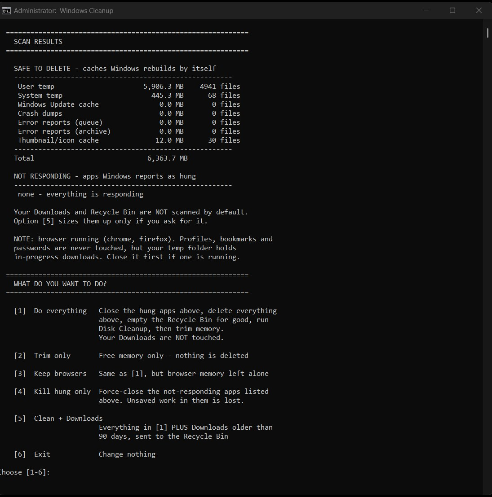
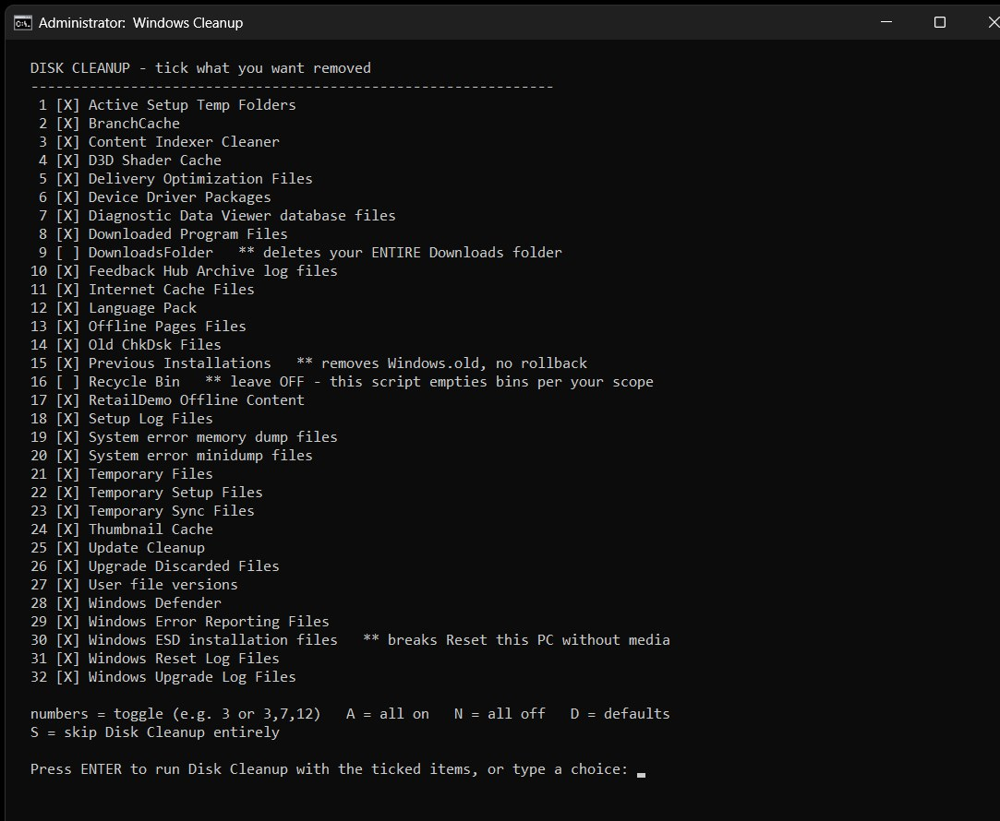
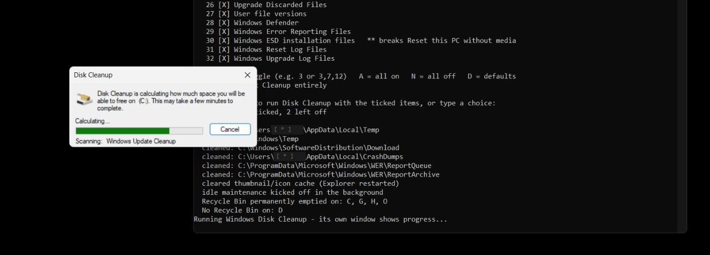
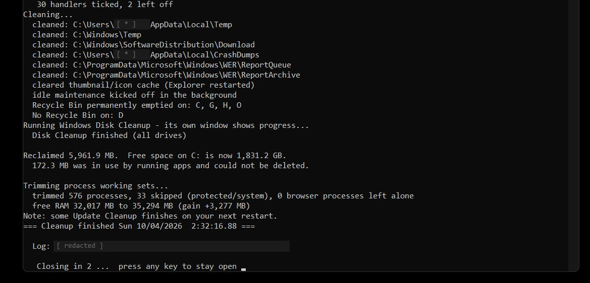

Windows Cleanup
cleanup_main.bat
Batch · PowerShell · Disk Cleanup · Registry · Windows Internals
Status: [ ACTIVE ]
Windows Cleanup is a batch script that treats cleanup as a two-step job: look first, then act. It measures every cache it can clear and lists applications that have stopped responding, then offers a six-option menu. Nothing is deleted until you pick.
After a run it prints a before/after report of free space and re-scans for files that were locked by running apps, so you can see what was left behind and why.
Key Features
- Scan-first: measures caches and lists hung apps before any change
- Six-option menu; nothing is deleted until you choose
- Before/after free-space report and a re-scan for locked files
- Guardrails: refuses drive roots, system folders and browser profiles
- Never closes core OS processes, and restarts Explorer when needed
- Its own Disk Cleanup profile, with risky items off by default
- Recycle Bin scope: the system drive or all drives
- Old Downloads move to the Recycle Bin after typing DELETE to confirm
- Self-elevates, and keeps a log that trims itself
What This Project Demonstrates
- Safe-by-default design: scan, confirm, then change
- Working knowledge of Windows internals and cleanup locations
- Antivirus-aware scripting that avoids false-positive patterns
- Clear reporting so the user can verify the result
Notes
The script is published on GitHub with its full documentation. Cleanup scripts are a common antivirus false-positive target, and it was written with that in mind.
Screenshots



